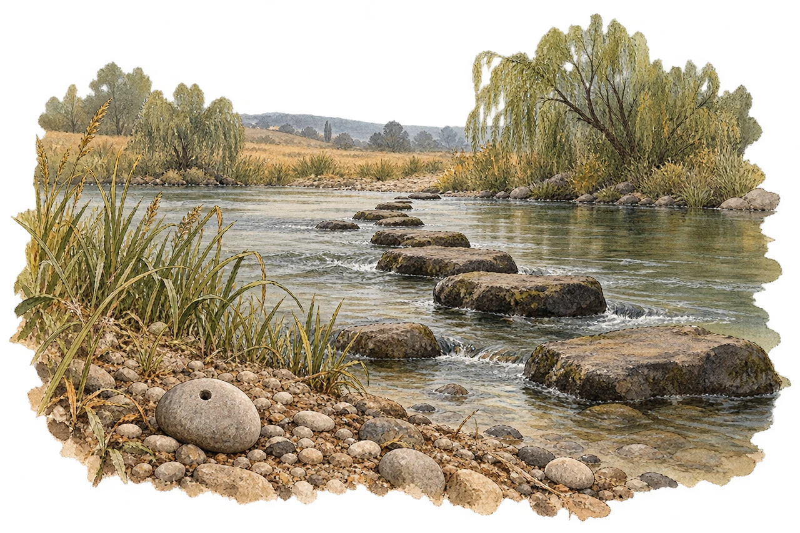
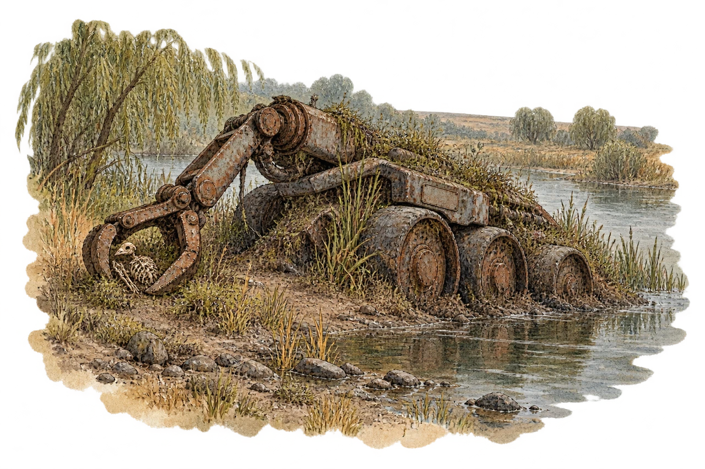
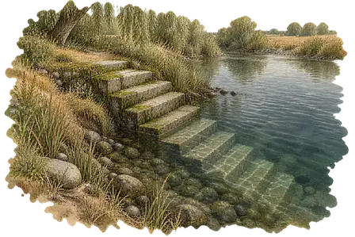

Planches artistiques séparées du jeu. Les découvertes plus tardives restent repliées pour préserver les surprises.
La terre à découvrir
 Une eau large et paresseuse, qui roule des galets noirs.
Une eau large et paresseuse, qui roule des galets noirs.Paysage existant : il reste la référence de lieu et de palette.
I · Le Gué

Le courant laisse un passage. Un galet retient le regard.Le premier lieu de la rivière. Les pierres émergent de l’eau, les roseaux se prolongent d’une planche à l’autre.
II · Découvrir la Carcasse
Cette illustration révèle un élément du récit.

Le métal s’efface dans la berge. La pince, elle, n’a pas lâché.Une machine d’entretien à six roues, un bras articulé et une présence fragile dans sa pince : la Carcasse suit le lore du jeu, dessinée par la même main que les paysages.
III · Découvrir l’Escalier Noyé
Ce lieu appartient à une exploration ultérieure.

Sous l’eau sombre, un angle trop droit pour être naturel.Les marches sont le signe à observer. La salle et ses objets restent dans le récit, sans être ajoutés à cette vue de la berge.